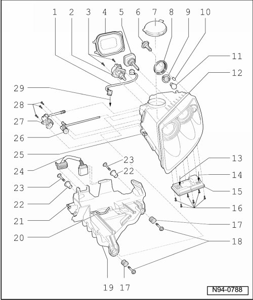

HID Headlamps Assembly Overview, through 11.06
HID Headlamps Assembly Overview, through 11.06
• After performing work which can affect headlamp adjustment, check headlamp adjustment and adjust headlamps if necessary. .

- Tightening specifications --> [ Front Lamps ] [1][2]Headlamp
1 - Wiring
• between High intensity gas discharge lamp (L13) and High intensity discharge lamp (L14) and Left Headlamp Range Control Module (J567) and Right Headlamp Range Control Module (J568)
2 - Left Headlamp Beam Adjusting Motor (V48) and Right Headlamp Beam Adjusting Motor (V49)
• Removing and installing --> [ Headlamp Range Control Positioning Motor ] HID Headlamps, through 11.06
3 - Screws
• for Left Headlamp Beam Adjusting Motor (V48) and Right Headlamp Beam Adjusting Motor (V49)
4 - Cap
5 - High intensity gas discharge lamp (L13) and High intensity discharge lamp (L14) ("Bi-Xenon")
CAUTION!
Note usage and safety notes for gas discharge headlamps --> [ HID Headlamps Safety Precautions ] HID Headlamps Safety Precautions
• Type D1S, 35 W
• Replacing --> [ HID Bulb ] HID Headlamps, through 11.06
• Checking --> [ Vehicle Electrical System Output Diagnostic Test Mode ] Initial Inspection and Diagnostic Overview
• High intensity gas discharge lamp (L13) and Left High-intensity Gas Discharge Lamp Control Module (J343) comprise one component.
• High intensity discharge lamp (L14) and Right High-intensity Gas Discharge Lamp Control Module (J344) comprise one component.
6 - Left High Beam headlamp (M30) and Right High Beam headlamp (M32) (" auxiliary high beam headlamp")
• Bulb H7 12V, 55 W
• Replacing --> [ Auxiliary High Beam Bulb ] HID Headlamps, through 11.06
• Checking --> [ Vehicle Electrical System Output Diagnostic Test Mode ] Initial Inspection and Diagnostic Overview
7 - Cap
8 - Cap
9 - Lamp socket with grip piece
• for Left Front Turn Signal Lamp (M5) and Right Front Turn Signal Lamp (M7)
10 - Left Parking Lamp (M1) and Right Parking Lamp (M3)
• Lamp 12V, W 5 W LL Xenon Blue (for RoW models)
• Lamp 12V, WY 5 W (for North American models, colored orange)
• Replacing --> [ Parking Lamp Bulb ] HID Headlamps, through 11.06
• Checking --> [ Vehicle Electrical System Output Diagnostic Test Mode ] Initial Inspection and Diagnostic Overview
11 - Left Front Turn Signal Lamp (M5) and Right Front Turn Signal Lamp (M7)
• Lamp 12V, PY 21 W Diadem
• Replacing --> [ Front Turn Signal Bulb ] HID Headlamps, through 11.06
• Checking --> [ Vehicle Electrical System Output Diagnostic Test Mode ] Initial Inspection and Diagnostic Overview
12 - Headlamp
• Removing and installing --> [ Headlamps, through 11.06 ] Headlamps, through 11.06
• Correcting installation position of headlamp --> [ Headlamps Correcting Installation Position ] Procedures
• Perform basic setting of headlamps.
13 - Connection
• To Left Headlamp Beam Adjustment Motor (V48) and Right Headlamp Beam Adjustment Motor (V49)
14 - Connection
• From wire for High intensity gas discharge lamp (L13) and High intensity discharge lamp (L14))
15 - Left Headlamp Range Control Module (J567) and Right Headlamp Range Control Module (J568)
• Removing and installing --> [ Headlamp Range Control Module ] HID Headlamps, through 11.06
• Coding Left Headlamp Range Control Module (J567) --> [ Left HID Headlamp Range Control Module, through 11.06, Coding ] HID Headlamps, through 11.06
• Coding Right Headlamp Range Control Module (J568) --> [ Right HID Headlamp Range Control Module, through 11.06, Coding ] HID Headlamps, through 11.06
• If Left Headlamp Range Control Module (J567) and Right Headlamp Range Control Module (J568) is coded, basic setting of Headlamps must be performed after the coding.
16 - Screws
• For Left Headlamp Range Control Module (J567) and Right Headlamp Range Control Module (J568)
17 - Adjustment bushings
18 - Screws
• For front headlamp mount
19 - Headlamp mount
• Headlamp Mount, 6-Cylinder Gasoline, Removing and Installing --> [ Headlamp Mount, through 11.06 ] Headlamp Mount, through 11.06
• Headlamp Mount, 10-Cylinder TDI and 8-Cylinder Gasoline, Removing and Installing --> [ Headlamp Mount, through 11.06 ] Headlamp Mount, through 11.06
20 - Securing clip
21 - Locking bolt
22 - Alignment bushings
• For rear headlamp mount mounting bolts
23 - Screws
• For rear headlamp mount
24 - Connector
25 - Securing clip
26 - Adjusting shaft for high beam lateral adjustment
27 - Adjusting shaft for dip and high beam height adjustment
28 - Screws
• For adjusting shafts
29 - Connector
• To Left Headlamp Range Control Module (J567) and Right Headlamp Range Control Module (J568)
- Left Headlamp Reflector Adjustment Solenoid (N395) and Right Headlamp Reflector Adjustment Solenoid (N396)
• Left Headlamp Reflector Adjustment Solenoid (N395) and Right Headlamp Reflector Adjustment Solenoid (N396) are located inside the headlamp and cannot be removed or adjusted.
• Headlamp must be replaced if damaged.
• Checking --> [ Vehicle Electrical System Output Diagnostic Test Mode ] Initial Inspection and Diagnostic Overview